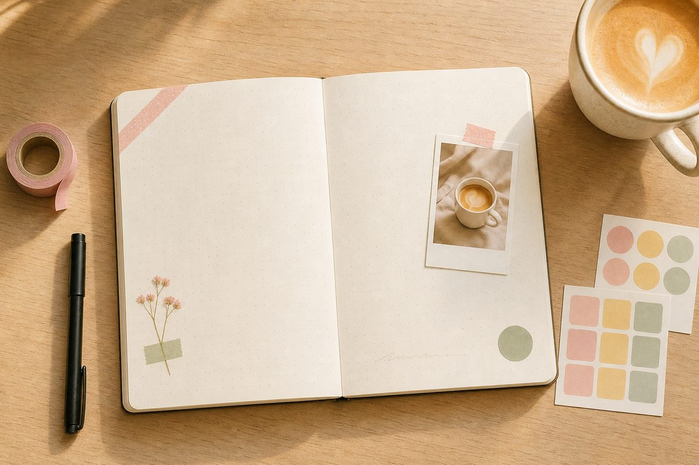
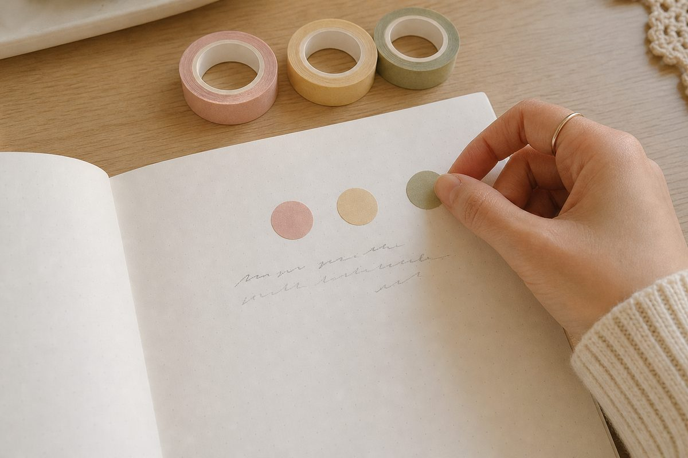

다이어리 꾸미기, 스티커는 많은데 왜 어수선할까?
영상 속 다이어리는 분명 예뻤는데, 똑같이 사 온 스티커를 붙이면 내 페이지만 어수선해지죠. 이유는 손재주가 아니에요. 너무 많이 붙여서예요. 다꾸는 더하는 일이 아니라 고르는 일이거든요.

오늘부터 딱 세 가지만 기억해요.
1색은 세 가지만
가장 많이 쓸 색 하나, 받쳐 줄 색 하나, 콕 찍을 색 하나. 이렇게 세 가지만 정하고 나머지 스티커는 오늘 서랍에 넣어 두세요. 색이 정리되면 스티커 모양이 제각각이어도 한 페이지처럼 보여요.
고르기 어렵다면 오늘 입은 옷 색에서 가져와 보세요. 생각보다 잘 어울리고, 나중에 펼쳤을 때 그날이 떠올라요.

2페이지의 3분의 1은 비워 두기
빈 곳을 보면 뭔가 채우고 싶어지죠. 그런데 여백은 덜 꾸민 자리가 아니라 눈이 쉬는 자리예요. 여백이 있어야 붙인 것 하나하나가 보여요.
꽉 채우고 싶은 날엔 일단 손을 멈추고 폰으로 한 장 찍어 보세요. 화면으로 보면 어디가 답답한지 바로 보여요.
3마스킹테이프는 비스듬히, 하나만
테이프를 반듯하게 여러 줄 붙이면 서류철처럼 딱딱해 보여요. 모서리에 비스듬히 한 줄, 그게 전부예요. 사진이나 영수증을 붙일 때도 위쪽 모서리 하나만 테이프로 잡으면 진짜 붙여 둔 것처럼 자연스러워요.
망친 글씨는 지우지 말고 스티커로 덮어요.
스티커는 원래 그러라고 있는 거예요.
다꾸를 오래 하는 사람들의 페이지가 예쁜 건 실력보다 습관 덕분이에요. 매일 완벽한 한 장을 만드는 게 아니라, 매일 한 장을 펼치는 것. 오늘 있었던 일 한 줄에 스티커 하나면 오늘 다꾸는 끝난 거예요.
오늘 밤 바로 해 볼 것
- 스티커 서랍에서 세 가지 색만 꺼내 놓기
- 오늘 있었던 일, 딱 한 줄 쓰기
- 모서리에 테이프 하나 붙이고 나머지는 비워 두기